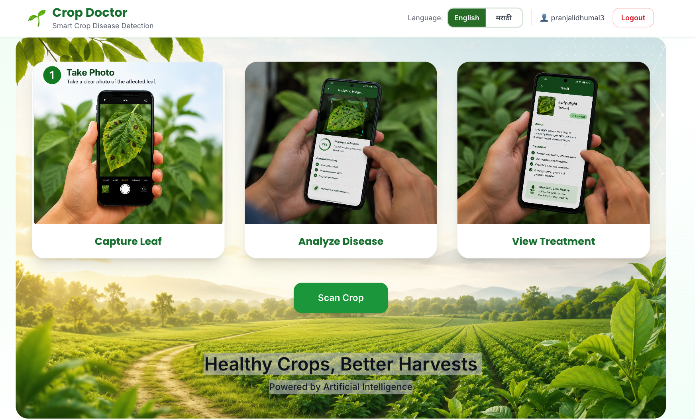
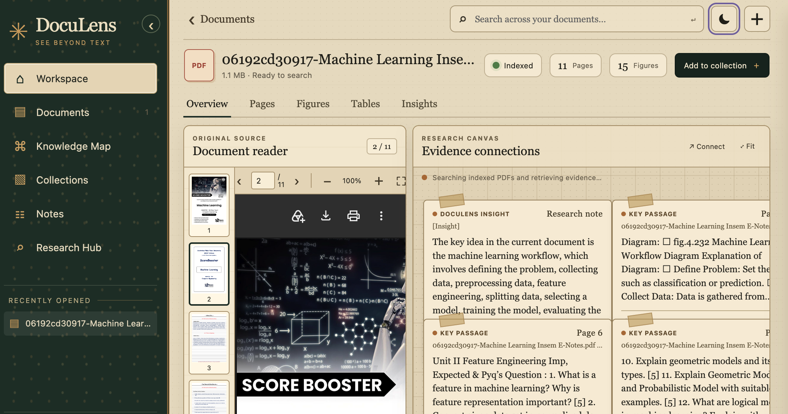
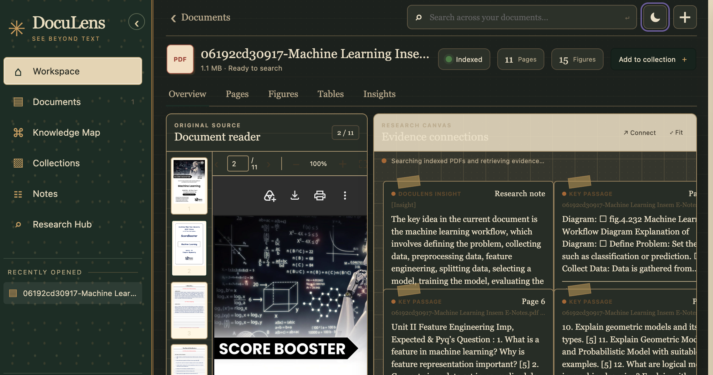
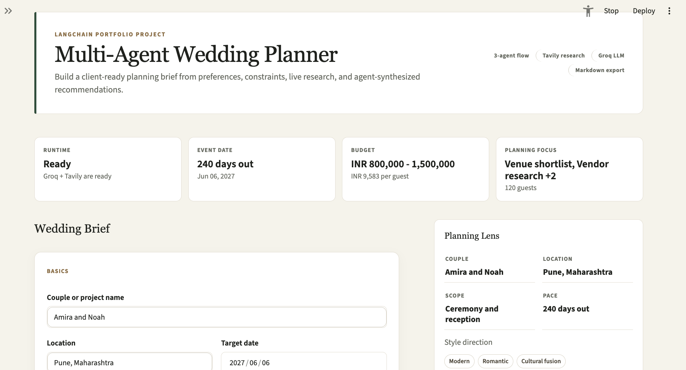

P
click the block
Hey, I’m Prajwal.
AI Engineer &
Software Developer
I build _
I build AI that reads documents and images, and turn research ideas into practical tools.
—viewing now
Or ask me anything below. Tip: press 1–5 to jump around.
> Pick a topic below or type a question.
Quests

Crop Disease Detection
Identify crop diseases from leaf images with a MobileNetV2 model trained on PlantDoc. React app with a Flask prediction API; 95.05% test accuracy.TensorFlowMobileNetV2FlaskReact
Demo soonCode


Multimodal RAG
Ask questions over PDFs and get answers grounded in both text and images.CLIPChromaDBOpenRouter
Demo soonCode

AI Wedding Planner
A research-assisted planning workspace that coordinates a LangChain planner with two Tavily-powered research agents to create tailored wedding plans you can download as Markdown.LangChainGroqTavilyStreamlit
Demo soonCode
Achievement unlocked
Inventory
AI / ML
TensorFlowCNNsRAGLangChainPandasNumPyBackend
PythonJavaFastAPIFlaskSpring BootFrontend + Data
ReactMySQLChromaDBSQLTools
GitGitHubJupyterVS CodePlayer profile
I like turning messy data into tools that actually help people. Right now I’m most excited by retrieval-augmented generation, multimodal AI that understands both text and images, and AI agents that coordinate useful work. I enjoy building practical AI, from spotting crop diseases in leaf photos to chatting with documents, and contributing to open source. Always curious about what to build next, and looking for AI/ML engineering roles.
RAGMultimodal AIDeep learningAI agentsOpen sourceHydro-informatics
RAGMultimodal AIDeep learningAI agentsOpen sourceHydro-informatics